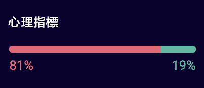

﹤
常見問題
1. 什麼是TECHPLAY價格指標？
TECHPLAY是種信譽良好、公允且使用過的價格指數，用於衡量匯率波動。當前，TECHPLAY指數是根據Binance交易所的數據進行計算和發佈的。
2. 什麼是二元期權？
二元期權是一種金融產品，具有2種期權中的1種，其收益基於美元期權是否到期：固定金額或無。它們是通用的，因為二元期權vi只能有2個結果。定時二進制選項再將基礎資產的價格與行使價進行比較時，格蘭到期了：在執行價格的右邊，交易者獲利;否則，交易者將失去期權。
3. 如何設置TECHPLAY優先權？
通過Binance交易所直接通過API獲得的數量和價格數據為用於計算TECHPLAY的加權指數。
要檢測並刪除格式錯誤和異常的數據，將使用特定用過的方法。
在TECHPLAY中，由於保留費用，排除了提供組成djch交換的TECHPLAY權重myc，最後更新時間為2020年4月20日世界標準時間12:00:05。
下表顯示索引的權重。
幣安
BTC / USDT
100.00%
4. 如何計算TECHPLAY價格指標？
2020年4月20日世界標準時間00:00，交易所的最終價格為:
幣安
最後價格
6,877.44
最後價格乘以上述權重:
幣安
最後價格
6,877.44
BTC / USDT
100.00%
最後價格 X 比例
6,877.44
最終價格x所有價格要素的權重是6,877.44。 依此類推，BTC / USDT價格為6,877.44(上午，四捨五入至最接近美元)
5. 交易中使用的流行術語？
總收益是您從交易時段賺取的錢。
利潤=總利潤-總虧損(您從虧損交易中損失的所有資金）。
增加意味按下此按鈕，您將生成一個新的UP命令。減少意味按下此按鈕，將生成一個新的DOWN的命令。
打開包含您正在等待結果的訂單。已關閉的訂單包含您過去下訂過的訂單。
情緒指標顯示該資產所有未平倉交易的比率。紅色表示交易數量Glam，綠色代表gla交易數量。

最終結果將顯示最新的指標，紅色表示下跌交易，綠色表示上升。
等待的時間:屆時，您將等待結果。
交易時間:您可以下訂單的時間。
6. 如何下單？
如何在交易中打開訂單？
1.選擇您要一次下單中的金額。
2.按下增加或減少按鈕下訂單，您要下訂單的數量沒有限制